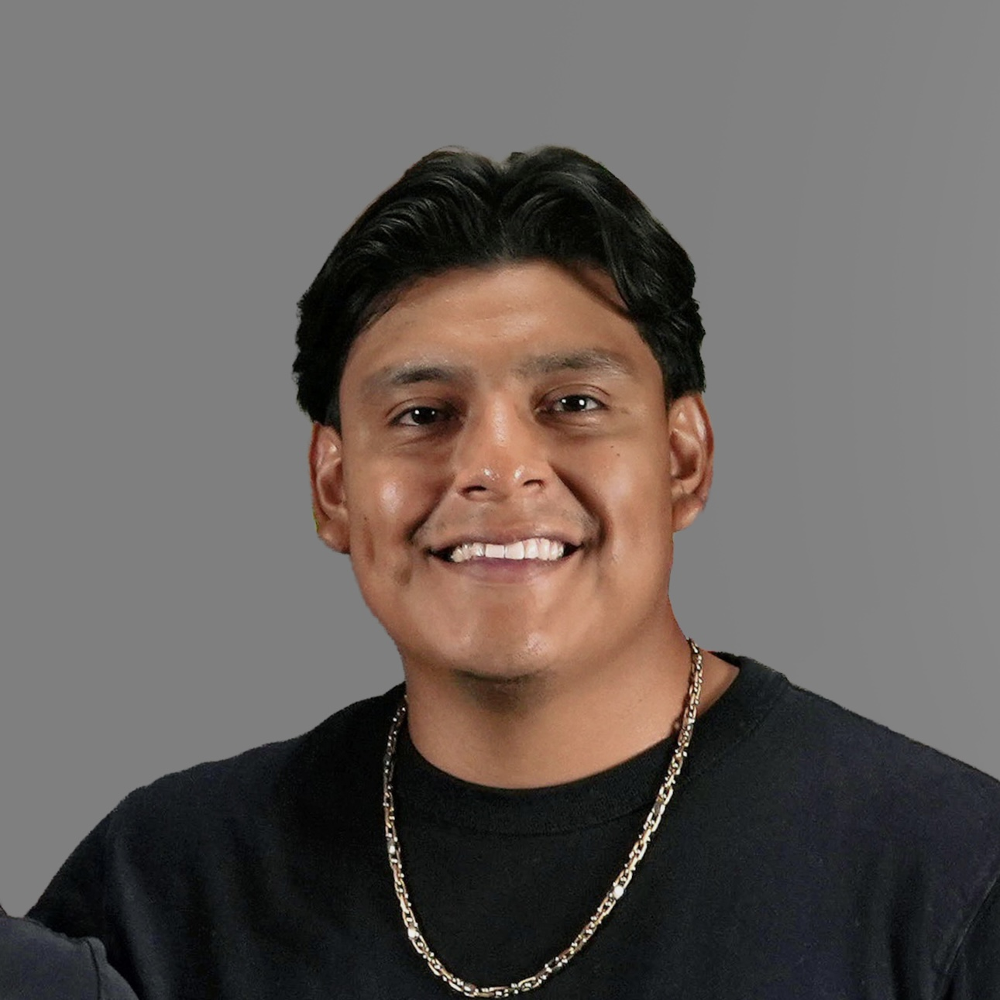

Portrait
Formal Bio
Biography
Eddy Velazquez is a professional who is focused on living life to the fullest. Through discipline, they hope to keep improving for the rest of their lives. With a background in exploration, Eddy has spent years learning new skills while balancing their work life and hobbies. This combination has shaped his identity, focused on clarity, purpose, and meaningful experiences.
Photography became one of their earliest hobbies and eventually evolved into a disciplined practice. Through landscape and city photography, Eddy learned how framing and timing can influence emotions and create memories. These lessons now directly affect his life, keeping him searching for new things to learn. Hiking plays an equally important role, offering not only physical challenge but mental clarity. Many ideas are born during long trails and quiet moments in nature. Hiking has had a significant influence on him; it serves as a reset from all the technology we are surrounded by every day. Taking the time to immerse himself in nature is what keeps his creative mind active and reminds him of perseverance.
In recent years, Eddy has shifted his focus from his usual hobbies to a new challenge: golf. The technicality of golf is what drove him to start playing. He sees it more as a challenge to keep adjusting and finding minor improvements that can make a huge difference in his game. The only struggle he finds now is finding the time to play. One of the goals for the future is to find the time to play so he can continue to develop his skills. Although he may never be delighted with his growth, he knows that all the small details are what truly make a good golfer.
This website serves as a biography, a place where visitors can follow the growth of Eddy’s hobbies, goals, and accomplishments. They can also gain insight into how creativity shapes professional growth. Each page contributes to his story, built on curiosity, discipline, and a commitment to lifelong learning.
Milestones
New Job
Started a new job that has helped him excel and grow. He has earned the coveted Safety Award and continues to champion workplace safety.
Hiking
Eddy took on the challenge of summiting Mount Washington. A feat he accomplished through determination and weeks of training.
Fitness
It’s been a long-time goal to achieve better fitness. This year, Eddy is committed to working out more and training to run his first marathon.